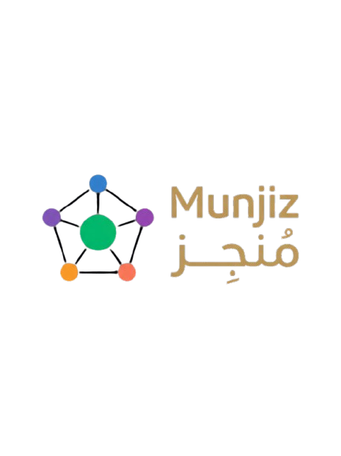

[ منجِز ] · MUNJIZ
EDITION 01 · 2026 · TECH DOCUMENTATION
// Multi-Agent Mortgage AI · Technical Reference

MUNJIZ
هذا مرجع تقني لمنصة منجِز · تقييم القرض العقاري الأوّلي. يشرح تصميم الوكلاء متعددة النماذج، وطريقة تبادل السياق عبر A2A، ومسار الطلب من إدخال البيانات حتى التوصية النهائية، وما يلزم للأمان والامتثال والتشغيل. أُعد للمهندسين والمدققين والجهات التنظيمية.
Technical reference for Munjiz Mortgage AI: multi-model agent design, A2A communication, the mortgage application review flow, security and compliance posture, and production economics. Written for engineers, auditors, and regulators.
Version v1.0
Status Pilot-ready
Pages 14
Stack Django · Channels · Celery · Redis · PostgreSQL · Docker
LLM Surface OpenRouter (Claude · GPT · Qwen · DeepSeek)
01
// EXECUTIVE SUMMARY
الملخّص التنفيذي
منجِز منصة وكلاء ذكاء اصطناعي تساعد البنوك السعودية على مراجعة طلبات القرض العقاري. يمر كل طلب على خمسة وكلاء متخصصين، ثم يخرج النظام بتوصية أولية واضحة تراعي السياق المحلي والضوابط التنظيمية.
منجِز · تقييم القرض العقاري الأوّلي طبقة ذكية لمراجعة طلبات التمويل العقاري. تضم خمسة وكلاء متخصصين، ولكل وكيل نموذج LLM يناسب مهمته: الجدارة الائتمانية، التحقق من الهوية والأهلية القانونية، قدرة العميل والدعم، تقييم العقار والضمان، ثم التوصية النهائية. يتبادل الوكلاء السياق عبر بروتوكول A2A داخلي، ويصدرون توصية أولية مرتبة (موافقة / مشروطة / مراجعة بشرية / غير موصى) خلال أقل من دقيقتين، بصياغة عربية واضحة، وحدود صلاحيات معلنة، وسجل تدقيق يمكن الرجوع إليه.
Munjiz Mortgage AI is an intelligent review layer for Saudi mortgage applications. Five specialized agents — Credit, Identity & Legal, Capacity & Support, Collateral, and the Orchestrator — each use an LLM suited to the task, coordinate through an internal A2A protocol, and produce a structured pre-approval recommendation in under two minutes, in clear Arabic, with explicit authority limits and a traceable audit record.
~60s
end-to-end pre-approval
~$0.08
cost per application
100%
decisions audit-logged
// THE THESIS
تقييم طلب التمويل العقاري يجمع بيانات من مصادر مختلفة (SIMAH، أبشر/يقين، تحقق من جهة العمل، Sakani أو تثمين العقار)، ثم يراجع جدارة العميل وأهليته القانونية وقدرته الفعلية وضمانه. منجِز يرتب هذه المراجعة المتكررة في مسار ثابت، ويترك الحالات الحدية للمراجع البشري.
A mortgage application review pulls data from multiple sources — SIMAH, Absher/Yakeen, employer verification, Sakani or independent valuation — and weighs creditworthiness, legal eligibility, real affordability, and collateral. Munjiz turns that repeatable review into a consistent, structured path, leaving edge cases to a human reviewer.
02
// SYSTEM ARCHITECTURE
المعمارية النظامية
يمتد النظام من المتصفح إلى مزودات النماذج. كل طبقة لها مسؤولية واضحة، ويمكن اختبارها أو استبدالها دون إعادة بناء النظام كله.
الطبقات السبع · Seven Layers
- Browser Layer — Vanilla JavaScript + Alpine.js + Tailwind. عميل WebSocket مع dedupe بثلاث طبقات، ونظام ثيمات، وتجربة عربية RTL أولاً.
- Edge / Reverse Proxy — Nginx يخدم الملفات الثابتة، ويمرر HTTP إلى Daphne ASGI server، ويدعم ترقية اتصال WebSocket.
- Application Layer — Django 5 + Django Channels + DRF. يستقبل طلبات HTTP وإطارات WebSocket، ويدفع المهام الطويلة إلى Celery.
- Async Compute Layer — Celery workers (concurrency=4 لكل instance) تلتقط مهام مراجعة الطلبات من Redis queue وتشغّل
AgentEngine مع سياق الطلب.
- Agent Engine — قلب النظام.
AgentEngine.run_review_with_ai(application) يستدعي الوكلاء الخمسة بالتسلسل، وكل وكيل يستخدم LLM مختلفاً عبر OpenRouter API ويقرأ نتائج الفحوصات المناسبة لدوره (SIMAH, Absher, Sakani…).
- Data Layer — PostgreSQL 16 للبيانات الدائمة: المتقدّمون، الطلبات، المستندات، مراجعات الوكلاء، التوصية النهائية، وسجلات التدقيق. Redis يستخدم للـ message broker و channel layer.
- External LLM Surface — OpenRouter يعمل كواجهة تجميع واحدة ويمرر الطلبات إلى Anthropic / OpenAI / Alibaba (Qwen) / DeepSeek عبر API موحد ومتوافق مع OpenAI.
مخطط النظام الكامل · Full System Diagram
┌──────────────────────────────────────────────────────────────────────────────┐
│ BROWSER (RTL Arabic) │
│ Dashboard ⇆ Landing Page · Alpine.js · WebSocket Client · Theme Toggle │
└────────────────────────────────────┬─────────────────────────────────────────┘
│ HTTPS + WSS
┌────────────────────────────────────▼─────────────────────────────────────────┐
│ NGINX (Reverse Proxy / Static) │
│ /static/* · /api/* · /ws/* (WebSocket upgrade) │
└────────────────────────────────────┬─────────────────────────────────────────┘
│
┌────────────────────────────────────▼─────────────────────────────────────────┐
│ DAPHNE (ASGI) · Django 5 + Channels │
│ ┌──────────────────────┐ ┌───────────────────────────────────────┐ │
│ │ HTTP: DRF Viewsets │ │ WebSocket: ApplicationConsumer │ │
│ │ · /api/applicants/ │ │ · group "application:" pub/sub │ │
│ │ · /api/applications/│ │ · receive() → Celery .delay() │ │
│ │ · …/trigger /report │ │ · group_send() → frontend │ │
│ └──────────────────────┘ └───────────────────────────────────────┘ │
└────────────────────────────────────┬─────────────────────────────────────────┘
│
┌────────────────────┼────────────────────┐
│ │ │
┌───────────────▼────┐ ┌────────────▼─────────┐ ┌──────▼──────────────┐
│ PostgreSQL 16 │ │ REDIS │ │ CELERY WORKERS │
│ · Applicant │ │ · channel layer │ │ ┌─────────────────┐ │
│ · MortgageApp │ │ (channels-redis) │ │ │ AgentEngine │ │
│ · Document │ │ · celery broker │ │ │ run_review_ │ │
│ · AgentReview │ │ · cache │ │ │ with_ai() │ │
│ · FinalRecommend. │ │ │ │ │ │ │
│ · AgentMessage │ │ │ │ │ for each agent: │ │
│ · (audit log) │ │ │ │ │ run_agent() │ │
└────────────────────┘ └──────────────────────┘ │ │ │ │ │
│ └──────┼──────────┘ │
└────────┼────────────┘
│
┌──────────────────────────────────────────────────────────▼───────────────────┐
│ OPENROUTER (OpenAI-compatible API) │
│ ┌────────────┐ ┌────────────┐ ┌──────────┐ ┌──────────┐ ┌─────────────┐ │
│ │ Anthropic │ │ Anthropic │ │ OpenAI │ │ DeepSeek │ │ Alibaba │ │
│ │ Opus 4.7 │ │ Sonnet 4.5 │ │ 4o-mini │ │ V3.2 │ │ Qwen3 80B │ │
│ │ ← منسق │ │ ← نورة │ │ ← فهد │ │ ← سارة │ │ ← خالد │ │
│ └────────────┘ └────────────┘ └──────────┘ └──────────┘ └─────────────┘ │
└──────────────────────────────────────────────────────────────────────────────┘
الفكرة الأساسية: كل طبقة تعرف ما تحتاجه فقط. الـ AgentEngine لا يهمه إن كان الاستدعاء قادماً من Celery أو من Django shell. والـ DashboardConsumer لا يحتاج أن يعرف مزود الـ LLM خلف كل وكيل؛ يستقبل رسائل موحدة فقط. هذا يجعل التبديل والاختبار والتشغيل أوضح وأسهل في الصيانة.
03
// HETEROGENEOUS MULTI-MODEL ARCHITECTURE
المعمارية متعددة النماذج
اختيار النماذج في منجِز ليس نسخة واحدة للجميع. كل وكيل يستخدم النموذج الأقرب لطبيعة دوره، مع موازنة بين جودة التفكير والتكلفة وثبات المخرجات.
لماذا ليس نموذجاً واحداً؟ · Why Not a Single Model?
الاعتماد على نموذج واحد يعني التنازل في جانب ما. Claude Opus قوي في الموازنة بين توصيات الموافقة والشروط لكنه مكلف. GPT-4o-mini سريع ومنضبط مع قواعد التحقق من الهوية والأهلية القانونية، لكنه ليس الأفضل في الصياغة العربية. Qwen3 80B ممتاز عربياً وفي حوار قدرة العميل، لكنه ليس الخيار الأول لحسابات SIMAH وDBR. DeepSeek V3.2 اقتصادي ومفيد في الاستدلال الرقمي على الجدارة الائتمانية، لكنه أقل مناسبة لتقييم العقار متعدد العوامل. لذلك يقوم التصميم على فكرة مباشرة: النموذج المناسب في المكان المناسب.
المعايير الثلاثة لاختيار النموذج · Three Selection Criteria
// 01
الملاءمة المعرفية
هل يثبت النموذج قوته في هذه المهمة تحديداً؟ Claude Opus لتوصية الموافقة النهائية، Sonnet لتقييم العقار وموازنة القيمة العادلة مع السعر المُعلَن، DeepSeek لحسابات الجدارة الائتمانية، Qwen للحوار العربي حول قدرة العميل، وGPT-4o-mini للتحقق المنضبط من الهوية والأهلية. الاختيار مبني على نتائج، لا على الانطباع العام.
// 02
التكلفة لكل طلب
سعر المليون توكن وحده لا يكفي للحكم. الرقم الأهم هو تكلفة مراجعة طلب واحد بحجم المدخلات الفعلي. تشغيل كل شيء على Opus يصل إلى ٠.٢٥$ للطلب، بينما التصميم المتعدد يقارب ٠.٠٨$، أي وفر يقارب ٧٠٪.
// 03
موثوقية الإخراج
الجودة وحدها لا تكفي؛ نحتاج مخرجات يمكن الاعتماد عليها في كل تشغيل. في الاختبار العملي، كان DeepSeek R1 يستهلك الميزانية في التفكير الداخلي ثم يعيد content فارغاً، لذلك استبدلناه بـ V3.2 instruct.
التوزيع النهائي · Final Assignment
| الوكيل / Agent |
النموذج / Model |
درجة الحرارة |
السبب / Rationale |
تكلفة/قرار |
| سارة / Sara — Credit |
DeepSeek V3.2 |
0.2 |
تحليل SIMAH + DBR + التزامات بأقل تكلفة |
~$0.003 |
| فهد / Fahad — Identity |
OpenAI GPT-4o mini |
0.3 |
تحقق منضبط من الهوية والأهلية والقيود القانونية |
~$0.0008 |
| خالد / Khalid — Capacity |
Qwen3 80B Instruct |
0.7 |
صياغة عربية لقدرة العميل والدعم والإفصاحات |
~$0.0015 |
| نورة / Nora — Collateral |
Anthropic Claude Sonnet 4.5 |
0.6 |
تقييم العقار: قيمة عادلة، مسار Sakani، LTV |
~$0.025 |
| المنسق / Orchestrator |
Anthropic Claude Opus 4.7 |
0.2 |
توصية نهائية مرتبة + شروط + مخاطر متبقّية |
~$0.05 |
// VENDOR INDEPENDENCE
كل model_name محفوظ في قاعدة البيانات داخل Agent.model_name، وليس مكتوباً داخل الكود. إذا ظهر نموذج أفضل لاحقاً، يكفي تحديث صف واحد في قاعدة البيانات. هذا يقلل الارتباط بمزود واحد ويجعل التطوير أسرع.
04
// AGENT-TO-AGENT PROTOCOL
بروتوكول A2A
يوضح الجزء التالي كيف يتبادل الوكلاء الرسائل والسياق، ولماذا يأتي كل وكيل في ترتيبه داخل سلسلة اتخاذ القرار.
المغلَّف الموحَّد · The Unified Envelope
كل تفاعل بين الوكلاء يمر عبر AgentMessageEnvelope، وهو dataclass موحد يجعل الرسائل مفهومة لكل أجزاء النظام، حتى لو كانت النماذج المستخدمة خلف الوكلاء مختلفة.
# apps/agents/a2a_protocol.py
@dataclass
class AgentMessageEnvelope:
from_agent: str # 'analytics' | 'operations' | 'customer' | 'queue' | 'orchestrator'
content: str # الرد الكامل للوكيل بالعربية
message_type: str = 'update' # analysis | update | suggestion | decision | alert
priority: str = 'medium' # low | medium | high | critical
to_agent: Optional[str] = None # None = broadcast لكل التبويبات
to_broadcast: bool = True
raw_data: Optional[dict] = field(default=None) # البيانات التي بَنى عليها الوكيل قراره
تسلسل المراجعة · The Review Sequence
الترتيب مقصود ويحاكي طريقة مدير ائتمان متمرس: نبدأ بالجدارة الائتمانية، ثم الهوية والأهلية القانونية، ثم قدرة العميل والدعم، ثم تقييم العقار/الضمان، وأخيراً التوصية النهائية.
01
سارة (الجدارة الائتمانية) · Sara (Credit)
تبدأ سارة لأن الجدارة الائتمانية هي بوابة الطلب. تقرأ بيانات SIMAH (الدرجة، التأخّرات، الالتزامات المفتوحة) وتحسب DBR بعد التمويل المطلوب، ثم تقدم حكماً رقمياً مع نسبة ثقة.
02
فهد (الهوية والقانوني) · Fahad (Identity & Legal)
يتحقق فهد من الهوية عبر أبشر/يقين، ويطابق راتب العميل مع جهة العمل، ويفحص أي قيود قانونية مثل إيقاف الخدمات أو حظر السفر. يضيف حالة الهوية، وتطابق صاحب العمل، وقائمة الحواجز إن وجدت.
03
خالد (قدرة العميل والدعم) · Khalid (Capacity & Support)
يفحص خالد القدرة الفعلية للعميل والإفصاحات الطوعية: اللغة، احتياجات الوصول، وليّ الشؤون القانوني، والحاجة إلى استشارة مستقلة. يضيف علامات الدعم اللازمة ويحدد الحاجة إلى ممثل قانوني.
04
نورة (تقييم العقار) · Nora (Collateral)
تقيّم نورة العقار والضمان. تختار مسار Sakani أو التثمين المستقل، وتقارن السعر المُعلَن بالقيمة العادلة، وتحسب LTV، وتضع إشارة عند وجود فجوة كبيرة.
05
المنسق · The Orchestrator
يأتي المنسق في النهاية لأنه صاحب التوصية. يستلم agent_inputs وفيها مخرجات الوكلاء الأربعة، ثم يصدر توصية مرتبة من أربعة احتمالات (موافقة أولية / مشروطة / مراجعة بشرية / غير موصى) مع الشروط والمخاطر المتبقية.
آلية تمرير السياق · Context Passing Mechanism
كل وكيل لاحق يستلم ما قاله من سبقه. مثلاً، عند استدعاء نورة، يحتوي user_message على:
{
"application": { "id": "DEMO-APP-001", "requested_loan_sar": 850000, "requested_term_years": 25 },
"applicant": { "name_ar": "أبو محمد", "monthly_salary_sar": 22000, "employer_sector": "government" },
"property": { "source": "sakani", "city": "الرياض", "declared_price_sar": 950000 },
"sara_review": "📊 SIMAH 752 · DBR بعد التمويل 41٪...",
"fahad_review": "⚙️ الهوية مطابقة · صاحب العمل مؤكَّد · لا قيود...",
"khalid_review": "💬 لا حاجة لوليّ شؤون · مستوى دعم اعتيادي...",
// نورة الآن ترى أحكام زملائها قبل أن تقيّم العقار
}
صيغة الإخراج · Mandated Output Structure
لكل وكيل قالب إخراج داخل system prompt. القالب يترك مساحة للغة الطبيعية، وفي الوقت نفسه يضمن وجود structured JSON block قابل للقراءة الآلية والتدقيق البشري:
- سارة: 📊 [SIMAH score] + [DBR after loan] + [verdict] + [مبرّر مختصر]
- فهد: [حالة الهوية] + [تطابق صاحب العمل] + [قائمة الحواجز] + [تحذير إن وُجد]
- خالد: [الحاجات المُفصَح عنها] + [قرار وليّ الشؤون] + [الموافقة الأخلاقية]
- نورة: [مسار التقييم] + [القيمة العادلة] + [LTV] + [علم الانحراف]
- المنسق: [تحليل موجز] ثم [توصية من أربعة] مع [شروط] و[مخاطر متبقّية للمراجع البشري]
// FUTURE: GOOGLE A2A STANDARD
البروتوكول الحالي بسيط عمداً. إذا احتجنا لاحقاً إلى workflows غير متزامنة، أو تنسيق بين فروع متعددة، أو agent discovery، يمكن توسيعه باتجاه معيار Google A2A الكامل دون تغيير كبير في شكل الرسالة الحالي.
07
// DATA MODEL
نموذج البيانات
يعتمد النظام على خمسة جداول رئيسية في تطبيق mortgage، تغطي ملف المتقدّم، والطلب، والمستندات، ومراجعات الوكلاء، والتوصية النهائية. صُممت هذه الجداول كسجل تدقيق append-only.
الجداول الخمسة · Five Tables
| Model | الحقول الرئيسية | الغرض |
|---|
| Applicant | applicant_id · name_ar · national_id · nationality · age · monthly_salary_sar · existing_monthly_obligations_sar · employer_name · employer_sector · employment_duration_months | ملف المتقدّم (مرتبط بـ ID مرجعي للأنظمة الأم) |
| MortgageApplication | application_id · applicant FK · requested_loan_sar · requested_term_years · property_source · property_id · property_declared_price_sar · screening_answers (7 boolean) · status | الطلب الفعلي + خيارات الفحص الأخلاقي الطوعي |
| Document | application FK · kind (national_id / salary_slip / employment_letter / bank_statement / property_deed / property_listing) · file · file_size_bytes · uploaded_at | المستندات المرفوعة لكل طلب |
| AgentReview | application FK · agent_type · order · content · structured (JSON) · compliance_snapshot (JSON) · is_demo · created_at | مراجعة الوكيل + JSON منظم + لقطة الفحوصات |
| FinalRecommendation | application 1:1 · recommendation · summary_per_agent · conditions_if_any · residual_risks_for_human_review · binding · demo_mode | التوصية النهائية المنظمة (denormalised لسرعة الاستعلام) |
الجدول الأهم: AgentReview
كل مراجعة وكيل تُحفظ في صف واحد مع البيانات المرتبطة بها، حتى يمكن الرجوع إلى السياق لاحقاً:
class AgentReview(models.Model):
id = UUIDField(primary_key=True, default=uuid.uuid4)
application = ForeignKey(MortgageApplication, related_name='reviews')
agent_type = CharField(choices=AGENT_TYPES) # analytics / operations / ...
order = IntegerField(default=0) # الترتيب في السلسلة
content = TextField() # السرد العربي الكامل
structured = JSONField(default=dict) # JSON parsed من المخرج
compliance_snapshot = JSONField(default=dict) # لقطة SIMAH/Absher وقت المراجعة
is_demo = BooleanField(default=True)
created_at = DateTimeField(auto_now_add=True)
FinalRecommendation — الإخراج المنظم
class FinalRecommendation(models.Model):
RECOMMENDATIONS = [
('recommend_initial_approval', 'توصية بالموافقة الأوّلية'),
('recommend_approval_with_conditions', 'توصية بموافقة مشروطة'),
('needs_human_review', 'يحتاج مراجعة بشرية'),
('not_recommended', 'غير موصى بها'),
]
application = OneToOneField(MortgageApplication)
recommendation = CharField(choices=RECOMMENDATIONS)
summary_per_agent = JSONField(default=dict)
conditions_if_any = JSONField(default=list)
residual_risks_for_human_review = JSONField(default=list)
binding = BooleanField(default=False) # pre-approval فقط
demo_mode = BooleanField(default=True)
// AUDIT TRAIL DESIGN
يحفظ compliance_snapshot نسخة من فحوصات SIMAH وأبشر/يقين وSakani التي اعتمد عليها الوكيل. إذا احتاج المدقق بعد سنة إلى فهم توصية معيّنة، يمكن إعادة بناء السياق الكامل الذي كان أمام الوكيل في تلك اللحظة: المتقدّم، الطلب، العقار، الفحوصات، ومراجعات الزملاء. بهذا لا يبقى التدقيق معتمداً على النتيجة النهائية وحدها.
// PRODUCTION INTEGRATION
هذا الـ schema خاص بالمرحلة التجريبية. عند الإنتاج، تُستبدَل الـ Applicant و MortgageApplication بجداول الـ LOS الرسمي للبنك (Loan Origination System)، ويبقى Munjiz مسؤولاً عن AgentReview + FinalRecommendation فقط، مع foreign key إلى application_id الخارجي. بهذه الطريقة يبقى التدقيق محفوظاً دون تكرار بيانات العميل.
10
// DEPLOYMENT ARCHITECTURE
معمارية النشر
يبدأ النشر بـ Docker Compose للـ pilot، ثم ينتقل إلى Kubernetes عند التوسع. يمكن تشغيله سحابياً، أو هجيناً، أو داخل بيئة البنك بالكامل.
Docker Compose Stack (Pilot)
في نسخة الـ pilot، يعمل النظام عبر ٦ خدمات داخل compose واحد:
| Service | Image | Purpose |
|---|
| web | Custom (Python 3.12 + Daphne) | HTTP + WebSocket via ASGI |
| celery_worker | Same as web | تشغيل المهام الطويلة (concurrency=4) |
| celery_beat | Same as web | المهام الدورية (تنظيف الطلبات المنتهية، تجميع التكاليف اليومية) |
| db | postgres:16-alpine | البيانات الدائمة |
| redis | redis:7-alpine | channel layer + celery broker + cache |
| nginx | nginx:alpine | reverse proxy + static files |
خيارات النشر للبنوك · Bank Deployment Options
// A · CLOUD
السحابة الإقليمية
AWS Riyadh / Azure Riyadh / STC Cloud، مع تمرير LLM calls عبر OpenRouter داخل المنطقة، وفصل واضح بين منجِز و الـ LOS الرسمي للبنك (يتصلان بـ webhook + signed REST). هذا مناسب لمعظم البنوك التجارية في بداية التشغيل.
DATA RESIDENCY: KSA
// B · HYBRID
هجين
تعمل منصة منجِز في السحابة، بينما تعمل LLMs محلياً عبر Ollama على GPU داخل datacenter البنك. بهذا لا تُرسل بيانات SIMAH أو Absher أو وثائق المتقدّم إلى مزود LLM خارجي.
SECURITY LEVEL: HIGH
// C · ON-PREM
تشغيل محلي بالكامل
كل المكونات تعمل داخل datacenter البنك، مع LLM محلي على NVIDIA H100/H200، واتصال داخلي مباشر بأنظمة LOS و SIMAH gateway. هذا المسار مناسب للبنوك الحكومية أو الجهات ذات متطلبات سيادية عالية.
SECURITY LEVEL: MAXIMUM
11
// SECURITY & COMPLIANCE
الأمان والامتثال
يراعي التصميم متطلبات الأمن السيبراني البنكي، ونظام حماية البيانات الشخصية، وحساسية بقاء البيانات داخل المملكة.
طبقات الأمان السبع · Seven Security Layers
- Encryption in Transit: TLS 1.3 لكل HTTP و WebSocket. الشهادات من Let's Encrypt أو من CA محلي معتمد.
- Encryption at Rest: تشفير PostgreSQL عبر AWS KMS أو Azure Key Vault، مع إدارة المفاتيح من خلال HSM.
- Authentication & RBAC: Keycloak أو Azure AD مع MFA إلزامي للواجهة. الأدوار الأساسية: Loan Officer, Credit Reviewer, Compliance Auditor, Admin.
- Network Segmentation: الـ stack داخل VPC مخصّص. قاعدة البيانات بلا اتصال مباشر بالإنترنت، وLLM calls تمر عبر egress proxy مراقب، واتصالات SIMAH / Absher / Sakani عبر private link / VPN معتمد.
- Audit Logging: كل قرار AI، وكل تغيير في DB، وكل authentication event يكتب في append-only log داخل S3 Object Lock مع retention لمدة ٧ سنوات.
- Secrets Management: HashiCorp Vault أو AWS Secrets Manager. لا secrets داخل environment variables، ولا داخل الكود، ولا داخل DB.
- Incident Response: تنبيهات PagerDuty عند LLMUnavailable burst > ٥/دقيقة، أو authentication failure > ١٠/دقيقة، أو cost spike > ٢٠٠٪ من baseline.
PDPL — حماية بيانات العملاء
السؤال الحساس هنا واضح: ما الذي يصل فعلاً إلى النماذج الخارجية؟ التصميم يخفف المخاطر عبر ثلاث طبقات:
// 01
Data Minimization
لا يُمرر رقم الهوية الكامل أو رقم الجوال أو IBAN إلى النموذج. ما يمرر فقط هو القيم المُصنَّفة المطلوبة للقرار: SIMAH score (رقم)، DBR (نسبة)، نتيجة Absher (passed/flagged)، مسار التقييم (sakani/independent)، LTV (نسبة).
// 02
Pseudonymization
يُستبدل اسم المتقدّم باسم مستعار مثل "أبو محمد" قبل بناء البرومبت. الاسم الحقيقي ورقم الهوية يبقيان داخل DB البنك / LOS، ويرتبطان بالطلب عبر application_id فقط.
// 03
On-Prem Option
للبنوك الأكثر تحفظاً، يمكن تشغيل Ollama + Qwen3 على GPU محلي، بحيث لا تغادر بيانات SIMAH ولا وثائق العميل بيئة البنك. القرار النهائي يعتمد على مستوى المخاطر المقبول.
// CURRENT STATUS
المرحلة الحالية هي pilot وليست نسخة إنتاج مرخصة من ساما، والتوصية النهائية binding=False أي أنها مساعدة قرار وليست قراراً ملزماً. طبقات الأمان أعلاه تمثل هدف النسخة الإنتاجية. أما الـ MVP الحالي داخل docker-compose فلا يتضمن بعد MFA أو audit immutability أو secrets vault أو ربط حقيقي بـ SIMAH/Absher (يستخدم mock compliance snapshot)، وهذه الفجوات موثقة ومجدولة في خارطة الطريق.